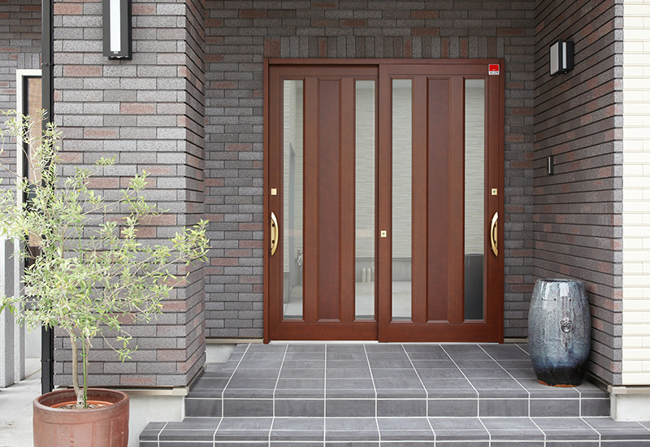
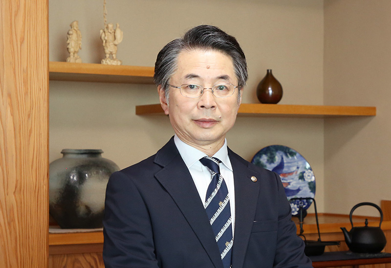
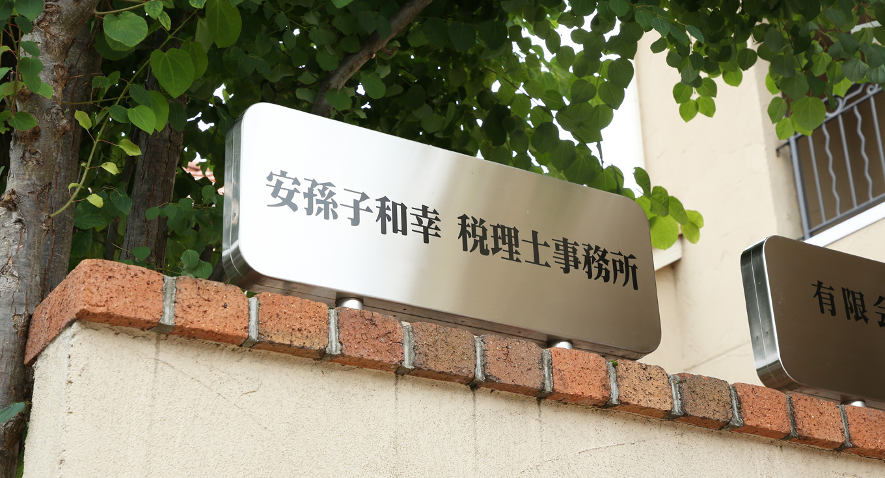

中小企業の税務顧問
企業と税務顧問契約を結び、巡回監査・決算・各種税務申告業務を中心に経営に関するアドバイスをいたします。経理部門の自計化のサポートや記帳代行も対応可能です。
山形市の「安孫子和幸税理士事務所」は、不動産相続を中心に、個人・法人問わず税務のあらゆるお悩みに寄り添います。初回のご相談は無料です。

税務・不動産のプロフェッショナルとして、日々数多くの税務サポートを承っている当事務所。なかでもよくいただくご依頼が「不動産相続」に関するご相談です。事前にしっかり準備して、財産をよりよい形で残しませんか？
あなた自身のため、そして大切な人のために、ゆとりある適切な相続をおすすめいたします。長期的なサポートで理想の相続を形にしますので、ぜひお気軽にご相談ください。
不動産は取得・保有・売却・相続など、あらゆる場面において、さまざまな税金がかかります。それぞれの場面において、“不動産投資家”として賃貸経営を行っている代表者自らが実体験に基づいた適確なアドバイスを提供いたします。

代表 / 税理士 / 宅地建物取引士 / 競売不動産取扱主任者
安孫子 和幸
実家は兼業農家を営んでおり、数反の農地を持っていました。その農地が土地区画整理事業の計画で、将来的に宅地に変わることに決まったのが私が20代の頃。今後は農作物から土地活用へ、収入源を変える必要性に迫られはじめたのです。同時に、相続税を含めた相続対策の必要性も感じていたこともあり、「税務について詳しくなりたい」と考え、この世界に足を踏み入れました。
当時は地元の市役所に勤めていましたが、退職して市内の大手会計事務所に入社。以来18年間、巡回監査・税務申告・経営助言などの業務に携わりました。そこでさまざまな業種の社長様から仕事を通じて“経営”というものを学ばせていただいたことが、現在にもつながる礎となっています。
その後は、宅建の資格を取得し、不動産業を学び、2001年4月に不動産管理会社を設立して起業。不動産管理・不動産賃貸・経営コンサルタントを中心に事業を行いながら、税理士試験5科目に合格し、2019年3月に税理士事務所を開業しました。
不動産はただ持っているだけでは固定資産税という維持費がかかるだけです。私自身も有効活用の方法や相続対策の方法などを自ら考え、価値ある不動産を上手に次世代に引き継ぐ資産運用を実践しております。
不動産相続に関するご相談を中心に、顧問契約、相続税申告、事業承継など、税務に関するさまざまなご依頼にお応えします。ちょっとしたご依頼も大歓迎です。気になることがありましたら、一度お問い合わせください。
企業と税務顧問契約を結び、巡回監査・決算・各種税務申告業務を中心に経営に関するアドバイスをいたします。経理部門の自計化のサポートや記帳代行も対応可能です。
相続は一生のうちに何度も経験するものではありません。それだけに、いざ相続を進めるとなったときにわからないことが出てくるのは当然です。当事務所では、お客様が損することの無いよう、可能な限りの節税を考慮した相続税申告を行ってまいります。お客様の状況をしっかりと伺ったうえで、今後の流れを丁寧にご説明し、細心の注意を払って対策・手続きを進めてまいりますので、安心してお任せください。
不動産の売却を検討されている方や、不動産を貸していらっしゃる方の税金に関するお悩みは、安孫子和幸税理士事務所にお任せください。これまでに培ってきた不動産の専門知識と経験・ノウハウを活かし、お客様のお困りごとを解決へと導きます。
本業が忙しく、経理にお困りの法人様のために、当事務所では経理業務のアウトソーシング（記帳代行・給与計算・その他経理事務等）を提供しております。毎日の記帳業務・給与計算・年末調整・源泉税管理など、お客様の求める経理事務代行やサポート業務は当事務所にお任せください。経理のトータルアウトソーシング先としてご活用いただけます。
相続後の人生設計を鑑みた節税（2次相続対策）・資産運用を総合的にサポートします。資産の購入・運用・処分・有効活用のことでお悩みがあれば、事前に何でもお気軽にご相談ください。地主、資産家の方、企業経営者の方に対し、一人ひとりの状況やお考えに沿った最適な提案をいたします。
ご相談からご契約、サポート開始までの流れをご説明いたします。お客様一人ひとりのお悩みに合わせて、最適なプランをご提案いたしますので、まずは現状のお悩みについてお聞かせください。
当事務所へのお問い合わせは、お電話または当サイトのお問い合わせフォームより承っております。ご相談内容の詳細を伺うための初回相談の日程を調整しましょう。
当事務所またはお客様のご希望の場所（車で30分位で行ける場所であれば、こちらからご訪問することも可能です）で、ご相談を伺ってまいります。プライバシーは厳重に管理しておりますので、抱えられているお悩みを何でもご相談ください。なお、初回の相談は無料です。
初回相談で伺った内容をもとに、解決へ向けてのプラン・お見積もりをご提示いたします。疑問点・不明点がありましたら、お気軽にご質問ください。わかりやすく丁寧にご説明いたします。
提示したプラン・お見積もり内容にご納得いただけましたら、契約へ進みます。契約にあたって必要なものを事前にご案内いたしますので、ご準備をお願いします。
契約内容に基づいてサポートを開始。お客様に少しでも早く安心していただけるよう、迅速に作業を進めてまいります。なお、サポート期間中に疑問点・不明点、新たなご要望が出てきましたら、遠慮なさらずお申し付けください。場合によってはプランを見直し、当事務所で対応しきれない課題は、弁護士、司法書士などの外部スタッフと連携してチームで対応いたします。
こちらでは、当事務所にご相談いただいたお客様からよく寄せられるご質問を紹介いたします。相続に関するお悩みから、税理士選びのポイントまで、さまざまな質問を紹介しておりますので、ぜひご覧ください。
相続には「相続税が発生するケース」と「相続税が発生しないケース」の2つのケースがあります。そのため、「相続税が発生しないケース」では、相続税の対策は必要ありません。しかし、ご自身がどちらに該当するかわからないことも珍しくないでしょう。そんなときは、不安を解消するためにもお気軽にご相談ください。
「暦年課税制度」「相続時精算課税制度」という2種類の贈与制度を活用することで、相続税を抑えることが可能です。ただし、ご自身に適した制度を選択し、適切な手続きをとることが大切です。誤った認識のまま、生前贈与を進めていると、将来的に相続税の申告漏れなどにつながる恐れもございます。安全・安心の相続のために、専門家への相談がおすすめです。
遺言には「自筆証書遺言」「公正証書遺言」「秘密証書遺言」の3種類の遺言方法があります。それぞれにメリット・デメリットがあるため、遺言の残し方には注意が必要です。どの遺言書を残せばいいのかわからない方には、お気軽にご相談ください。ご要望を伺ったうえで適切な遺言書の作成をご案内します。
相続は「必要になってから」行っても、手続きや書類の収集に時間がかかり、なかなか進行しないことがほとんどです。また、1人で手続きを進めるわけにもいきません。ご家族や血縁のある方々のご了承が必要になる手続きがほとんどのため、事前にある程度準備を進めておくことが重要です。
税理士としてできるサポートには全力を尽くしますが、すべての手続きを当事務所が行えるわけではありません。ときには、お客様自身に一部のお手続きをお願いすることもあります。その場合は、なるべく早くお返事・ご対応をいただくことで、滞りなく手続きを進めることができます。あらかじめご了承ください。
税理士選びにはいくつかのポイントがありますが、なかでも「確かな経験があること」「スピーディーに対応してもらえること」は欠かせません。当事務所は、大手税理士事務所で豊富な経験を積んだ代表が、あなたのお悩みを手早く解決へと導きます。安心してご相談ください。

| 事務所名 | 安孫子和幸税理士事務所 |
|---|---|
| 代表者 | 安孫子 和幸 |
| 設立年 | 2019年 |
| TEL | 023-646-1256 |
| FAX | 023-643-7649 |
| 登録番号 | 140430（東北税理士会所属） |
| 営業時間 | 9：00〜17：30 |
| 休業日 | 土曜日、日曜日、祝日、お盆、年末年始 （ご予約いただければいつでも対応いたします） |
| 住所 | 〒990-2451 山形県山形市吉原3-2-15 |
| アクセス | 「山形市南館交差点」より車で5分 山交バス「吉原停留所」より徒歩7分 |
税に関する不安は一人で抱え込まず、専門家までご相談ください。
問題解決に向けて親身になって対応いたします。
〒990-2451 山形県山形市吉原3-2-15